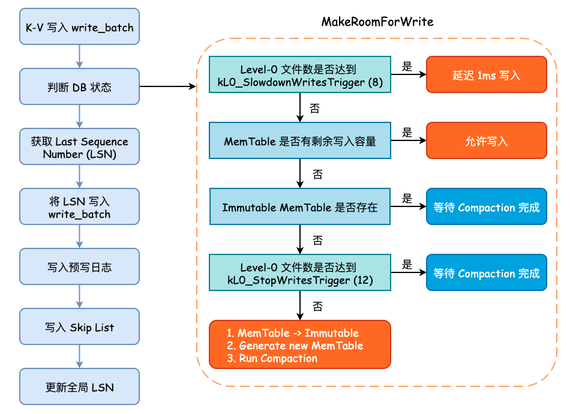
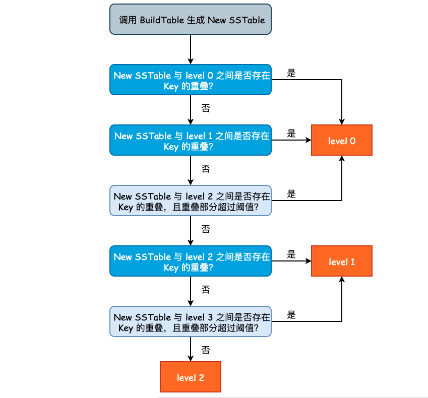

leveldb Minor Compaction
Compaction Strategy
ref: LSM Tree-Based 存储引擎的 compaction 策略比较
ref: Leveled Compaction in RocksDB
ref: This post revealed the performance of size-tiered compaction.
ref: This post revealed the performance of leveled compaction.
从 LSMTree 的名字就知道 Merge 操作是核心。Merge 也被称为 Compact，因为 Merge SSTable 的过程中必然会清除掉一些无效的 InternalKey，从而减少磁盘开销。
主流的 Compaction 策略包括 size-tiered compaction 和 leveled compaction。同样是分区存储，前者采用单文件的方式，限制分区下的 SSTable 的大小；后者采用多文件的方式，限制分区下的 SSTable 数量。
那么如何衡量一个 Compaction 策略的好坏？可以类似于衡量算法性能，从时间和空间两方面进行。
Time Complexity
在存储领域，需要注意到数据的操作耗时实际上是与数据的规模有紧密联系的。
针对写操作，需要评估 compact耗时/compact数据量 的比值；
针对读操作，二分查找的方式已经决定了读操作的时间复杂性上界，而数据量则是明确了操作耗时，所以 compact 操作减少数据量能提升查询效率。
Space Complexity
在存储领域空间复杂性才是考量的重点，需要在以下三个指标间权衡：
- 读放大效果：读取数据时实际读取的数据量大于真正的数据量。例如在LSM树中需要先在MemTable查看当前key是否存在，不存在继续从SSTable中寻找。
- 写放大效果：写入数据时实际写入的数据量大于真正的数据量。例如在LSM树中写入时可能触发Compact操作，导致实际写入的数据量远大于该key的数据量。
- 空间放大效果：数据实际占用的磁盘空间比数据的真正大小更多。上面提到的冗余存储，对于一个key来说，只有最新的那条记录是有效的，而之前的记录都是可以被清理回收的。
从结果来看，size-tiered compaction 存在空间放大的缺陷，leveled compaction 存在写放大的缺陷。所以产生了一个优化点，即将两种策略进行混合。
RocksDB 的做法是，在L1层及以上采用 leveled compaction，而在L0层采用 size-tiered compaction（在 RocksDB 中也称为 universal compaction）。如下图所示：

Compaction Stages
Compaction 一共可分为三种（三阶段）: Minor Compaction、Major Compaction 以及 Seek Compaction。
- Minor Compaction 特指将位于内存中的 Immutable MemTable 持久化至硬盘中。
- Major Compaction 则是 leveldb 运行中最为核心的数据合并过程，主要是将位于不同层级的 SSTable 进行合并，以减少同一个 Key 的存储空间。
- Seek Compaction 则主要用于优化查询效率，后文将会详述此过程。
Parallel Compaction
在 Major Compaction 过程中，如果两个 Compact 操作是不相交的，那么显然可以将这些操作分散到多个线程中去。（实际上，这也是 RocksDB 的一个优化点。）
Minor Compaction
Minor Compaction 相对于其它两者要更简单一些，并且是所有 SSTable 的“出生地”，即在 Minor Compaction 中，将会调用上一篇提到的 BuildTable() 方法创建 SSTable，并将 Immutable MemTable 的内容写入。
Minor Compaction 的触发时机
在前面的 leveldb Key-Value 写入流程分析 一篇分析中，其实就有提到过 Minor Compaction。即当 MemTable 已经没有剩余的写入空间，并且 Immutable MemTable 不存在时，会将当前的 MemTable 转变为 Immutable MemTable，并初始化一个新的 MemTable
以供写入，同时主动地触发 Minor Compaction，即显式调用 MaybeScheduleCompaction() 方法。

上图为 leveldb Key-Value 写入过程，我们只需要关注何时进行 Run Compaction 即可。另一点需要注意的是，所有 Compaction 的入口都是 MaybeScheduleCompaction() 方法，其实现如下:
/* Compaction 入口函数 */
void DBImpl::MaybeScheduleCompaction() {
mutex_.AssertHeld();
if (background_compaction_scheduled_) {
// Already scheduled
} else if (shutting_down_.load(std::memory_order_acquire)) {
// DB is being deleted; no more background compactions
} else if (!bg_error_.ok()) {
// Already got an error; no more changes
} else if (imm_ == nullptr && manual_compaction_ == nullptr &&
!versions_->NeedsCompaction()) {
// No work to be done
} else {
/* 设置 background_compaction_scheduled_ 标志位，并将 BGWork 方法加入线程池中 */
background_compaction_scheduled_ = true;
env_->Schedule(&DBImpl::BGWork, this);
}
}
可以看到，该函数不接受任何参数，也就是说，到底该运行哪种 Compaction 是由 DBImpl::BGWork 所决定的。env_->Schedule 其实就是将 Compaction 任务提交至任务队列中，由后台工作线程从任务队列中取出并执行。
任务队列是用户实现的单工作线程的 Event-Loop，db_impl 没有将 schedule 相关部分分离出来。这里实现的比较简洁，因为并非系统的 bottleneck，实际上调用 libuv 等库也是一种不错的选择。
Minor Compaction 的具体过程
Minor Compaction 的入口点为 CompactMemTable() 方法，方法内部主要调用 WriteLevel0Table() 方法。
WriteLevel0Table()主要完成了三件事情：
- 根据 MemTable 构建新的 SSTable，假设该 SSTable 叫做 New SSTable;
- 根据 New SSTable 中的 Key 与其他 level 的 Key 重叠情况，决定将 New SSTable 放入到哪一层;
- 记录 New SSTable 的元数据，包括文件大小、构建持续时间以及最终所在的 level 信息。
Build SSTable 的过程可参考上一篇文章的内容，不再赘述。新产生的 SSTable 不一定总会出现在 level 0 层。这是因为如果 level 0 层的 SSTable 产生速度过快或者过多时，将会影响 leveldb 整体的查询效率，因为在查询的最坏情况下，我们需要遍历 level 0 中的所有 SSTable。因此，假如说 New SSTable 的 Key 和 level 2 层的 Key 没有任何重叠，并且和 level 3 之间只有少数 Key 重叠时，我们完全可以将 New SSTable 放置于 level 2 层。
决定新产生 SSTable 的层次的过程在 PickLevelForMemTableOutput()方法，其实现逻辑有些绕，因此就不贴源代码了，流程图如下图所示：

levledb 通过参数 kMaxMemCompactLevel（定义在 db/dbformat.h） 来控制 New SSTable 最高可被推到哪一层，默认值为 2，也将就是说，New SSTable 最多能够被推到 level 2 中。但是注意到总层数（kNumLevels）为 7，避免 New SSTable 被推得过远，也尊重了局部性原理。
从优化查询的角度来说，New SSTable 在满足一定的条件时，应尽可能地被推入到除 level 0 层之外的其它 level。但是又不能推的过高，否则查询和 Compaction 都会出现额外的开销。因此，leveldb 指定了 kMaxMemCompactLevel 参数，由该参数来控制 New SSTable 最高可以被推送至哪个 level。